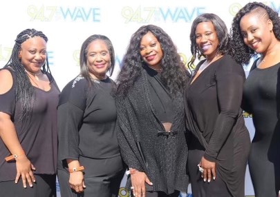

Chosen Gospel Recovery Singers was founded in 2002.
Singing original songs written by Darlene Watley the singers Would go out into the community and approach the homeless with a song a testimony, with prayer and a care packages with personal care items along with our business cards that said are you trapped and our contact information.
To our surprise the community embraced our songs, they would open up to us and to many we were able to be a vehicle to recovery.
Our humble beginnings were the riches moments that I could never forget.
We soon became very actives in community events throughout the greater Los Angeles area.
